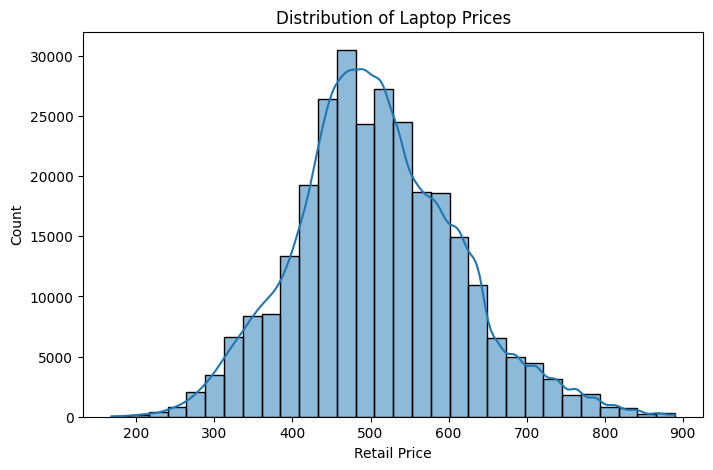
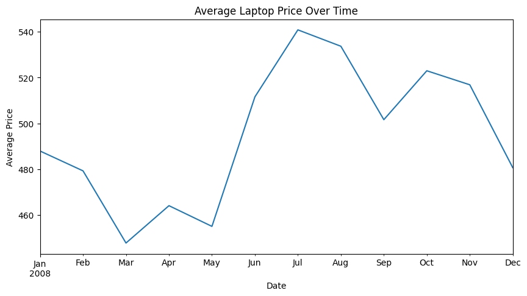

Laptop Sales and Pricing Analysis
Explores sale prices, store performance and laptop configurations in a London retail teaching dataset, with reproducible descriptive comparisons.

Business question
How do laptop sale prices vary by store and configuration, and where do sales patterns merit further investigation?
Approach
Explore price distributions, monthly prices, variation across stores, sales volumes, configuration revenue and configuration availability. The notebook uses the publisher-distributed mlba teaching dataset and no longer depends on a private Google Drive requirements file.
Findings
The saved dataset has 284,129 non-missing retail prices, with a mean of approximately £508.13 and a median of £500. Configuration availability differs across stores; the analysis identifies seven stores that do not sell all configurations. These are descriptive findings from the teaching dataset.

Limits
No regression or regularization model is trained in this notebook, so no predictive accuracy is claimed. Missing prices affect price and revenue summaries. Coordinate differences are not route distances, and physical units must be verified before describing travel distance in kilometres.